Chapter 5 Results
5.1 Food delivery outlook
Let’s start with some fundamental data on food delivery, including market share, growth rates for both traditional and online food delivery, industry revenue, and the number of users.
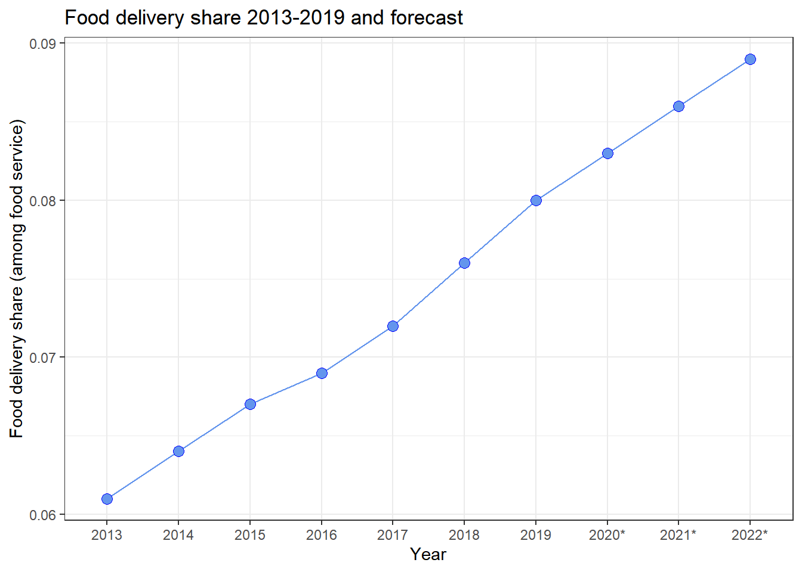
- We can observe from this line chart that the market share of food delivery has been continuously increasing at a pace of about 0.35 percent per year.
- It’s worth mentioning that the data source for 2020-2022 is a forecast based on prior year’s trends, therefore it displays the same steady rise as the previous year. In reality, due of the pandemic, there may be some significant changes in food delivery share in the food delivery industry.
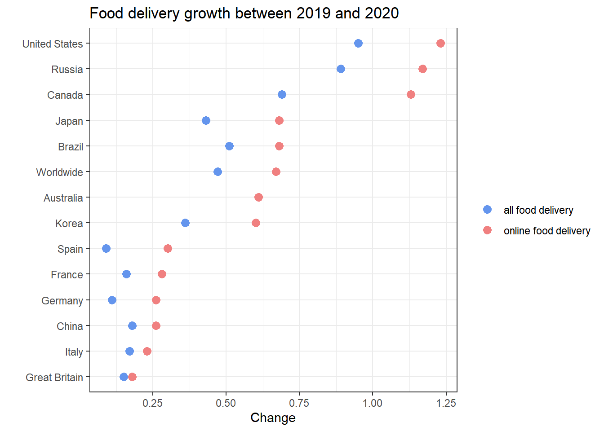
- We’ll look at the overall growth rate of the different countries as well as online food delivery when it comes to how to order food delivery. We do this by plotting the rate of change on the x-axis and the country on the y-axis, with distinct colored points representing all food delivery and online food delivery.
- According to the graph above, between 2009 and 2020, the United States, Russia, Canada, Japan, and Brazil have the highest growth rates in both all food delivery and online food delivery. The growth rate of online food delivery was higher than the growth rate of all food delivery in each of these nations; in fact, more than half of the countries had a substantially higher growth rate of online food delivery.
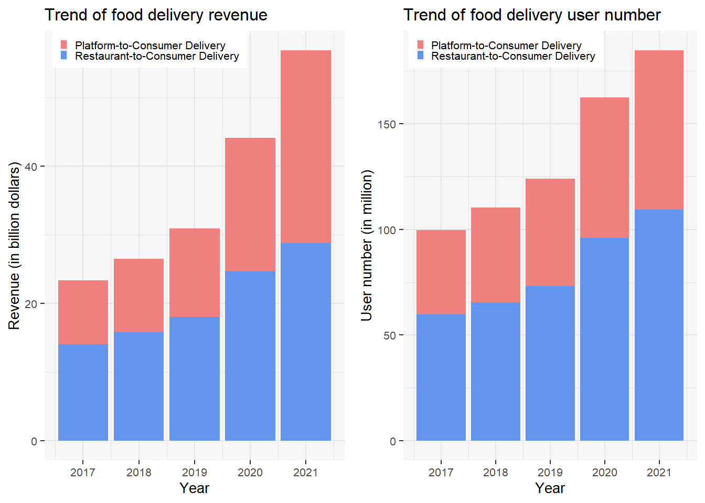
- We’ve divided the revenue from meal delivery into two categories. The first is Platform to Consumer Delivery, which focuses on online delivery services that serve customers with meals from partner restaurants that aren’t required to conduct food delivery. Restaurant to Consumer Delivery is the second option, which is a more traditional method of ordering food delivery.
- The ratio of platform delivery to restaurant delivery is increasing year after year, as shown in the first graph. Restaurant delivery income is roughly 1.5 times that of platform delivery in 2017, and by 2021, restaurant and platform delivery revenue becomes virtually equal. Overall, both companies’ revenue is expanding year after year.
- The number and ratio of users are trending in the same direction as market revenue. Revenue and user numbers both climbed moderately from 2017 to 2019, before climbing dramatically from 2020 to 2021.
5.2 Demand for food delivery analysis
In this section, we look at the causes behind the shift in the food delivery market from the demand side. We look into whether the four aspects, such as smartphone usage, working hours, CPI, and food expenditure, can explain the reasons for the changes in the food delivery business.
5.2.1 Smartphone ownership analysis
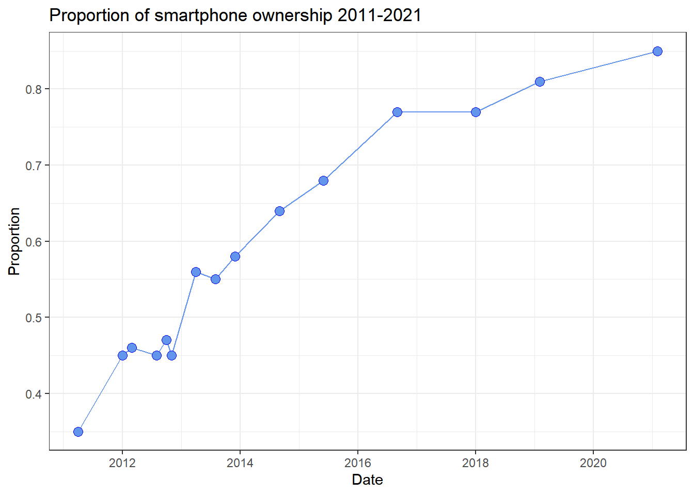
- We first expected that smartphone ownership would be associated to online ordering, notably in terms of platform to customer delivery and number of users. Because more individuals are utilizing smartphones, the likelihood of using an ordering APP will increase.
- We can observe from this graph that the use of smartphones increased the most rapidly from 2011 to 2016, and that this is due to technological advancements. Because the data in the preceding section is limited for the years 2017 to 2021, we will also concentrate on these years in this section. We can observe that there was no growth from 2017 to 2018, which corresponds to what we saw in the previous section. In the years that followed, smartphone ownership rose slowly, but that was also due to the fact that smartphone ownership was near saturation.
5.2.2 Working hour analysis
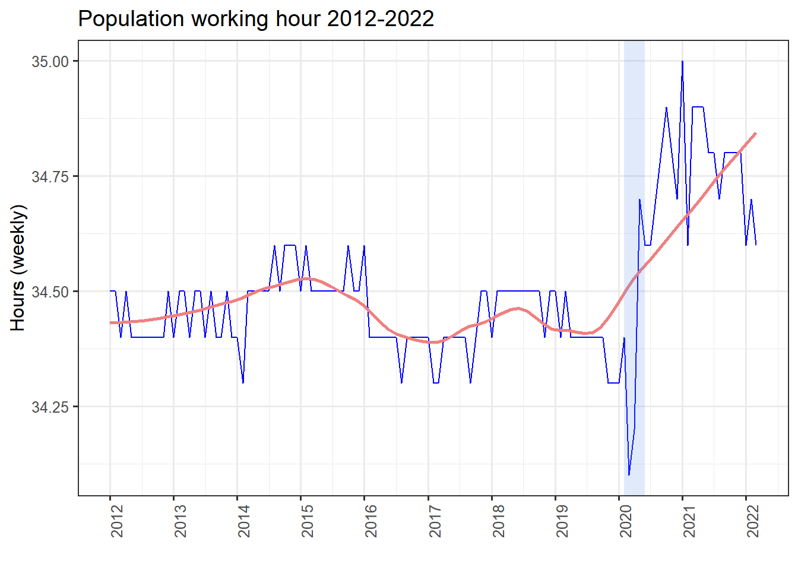
- We assumed in this section that when working hours increased, the market share and users of food delivery would increase as well, because the amount of time people spend preparing their own food and dining in would decrease.
- Overall, between 2012 and 2019, the population’s working hour did not change much, although it ebbed and flowed, hovering around 34.5 hours per week. Hours worked dipped substantially during the Covid-19 in 2020 before fast rising, and have risen and fallen dramatically since then, but are still higher generally than before.
- When compared to our prior market analysis, these large shifts in work hours do not appear to have had an impact on our market, since the long-term trend in work hours is still increasing, which supports our theory that longer work hours will lead to an increase in food delivery users and the market revenue.
5.2.3 CPI analysis
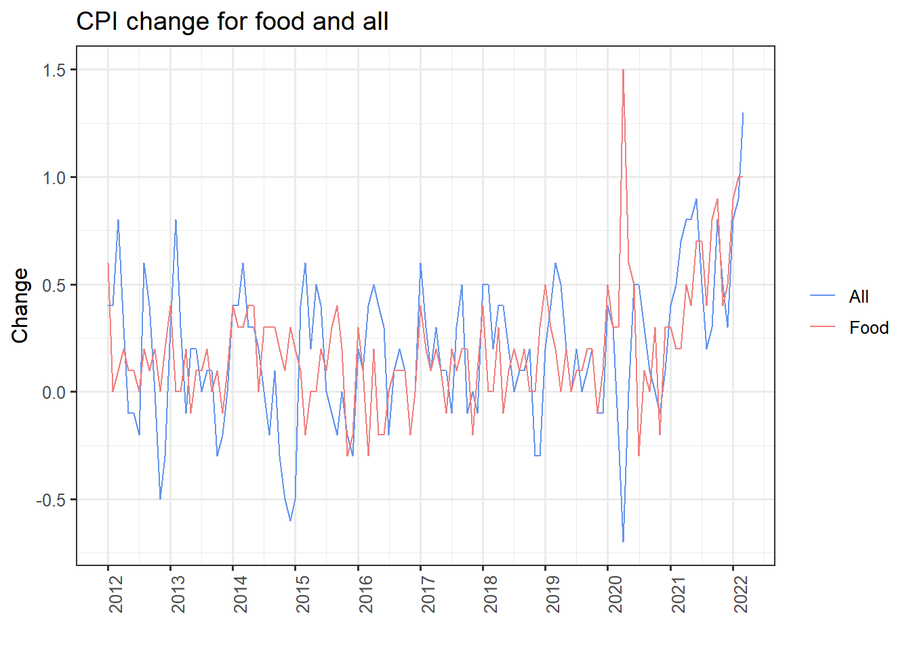
- Our CPI(Consumer Price Index) analysis, unlike the prior demand analysis, is based on the assumption that inflation will overstate market growth. In its most basic form, CPI implies that we determine the amount and kind of commodities at the onset, and that this aspect does not vary over time; only the price of goods fluctuates. This concept suggests that if the CPI is too high, inflation is rising, and the food delivery market, which may have been growing swiftly at first, is now being overvalued as the price index rises. What we need to do is to remove the impact of CPI from the market in our analysis. Of course, CPI has no bearing on market share, it only affects the nominal value.
- In this time series graph, we depict the overall CPI and the food CPI separately. The graph shows that the change in CPI is fairly similar to the previous figure, ranging about 0 from 2012 to 2020, with some sporadic large changes. Furthermore, both food and total CPI changes are in one direction and follow the same pattern. And the changes after 2020 are extremely dramatic. First, the food CPI changes by 1.5 in 2020, implying that our earlier food market revenue estimates may be significantly overstated, although we can’t quantify this overestimation here due to the complexities of calculations. After that, the overall food CPI increased in long term trend.
- We could infer from price index analysis that the food delivery market’s revenue and growth are not as high as they appear. One of the primary reasons is that food prices have risen, resulting in an increase in the food delivery market’s revenue, which may not be as significant if the quantity of food sold is the only factor. This may also be observed in the number of users, as the rise in revenue of the food delivery market is more substantial than the number of users.
5.2.4 Food expenditure analysis
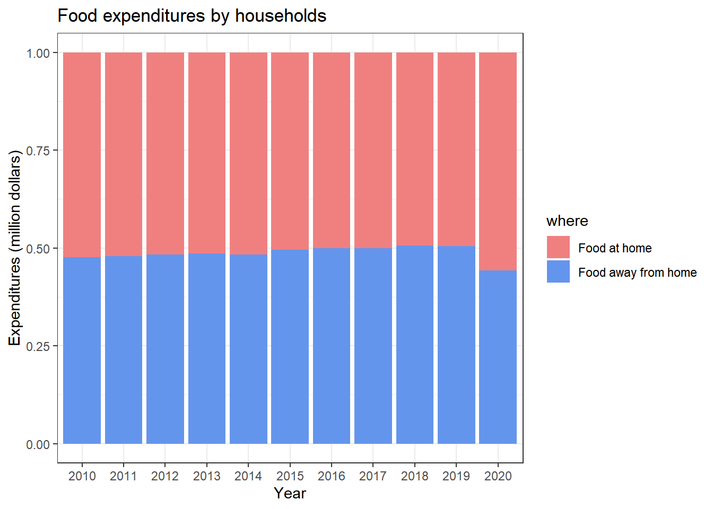
- We first assumed that as the market share of food delivery grew, so would household food consumption away from home. However, from 2010 to 2020, the ratio of food consumed at home to food expenditure away from home stayed at 1. Only during the 2020 outbreak did the percentage of food expenditure spent at home rise slightly, but not significantly.
5.3 Supply for food delivery analysis
In this section, we examine the relation between key supply-side issues and the food delivery market. These factors include working earning, the number of restaurants, the unemployment rate, and educational level.
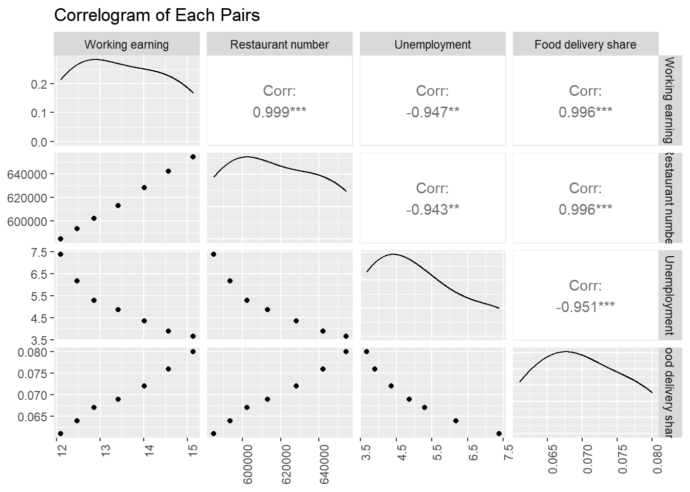
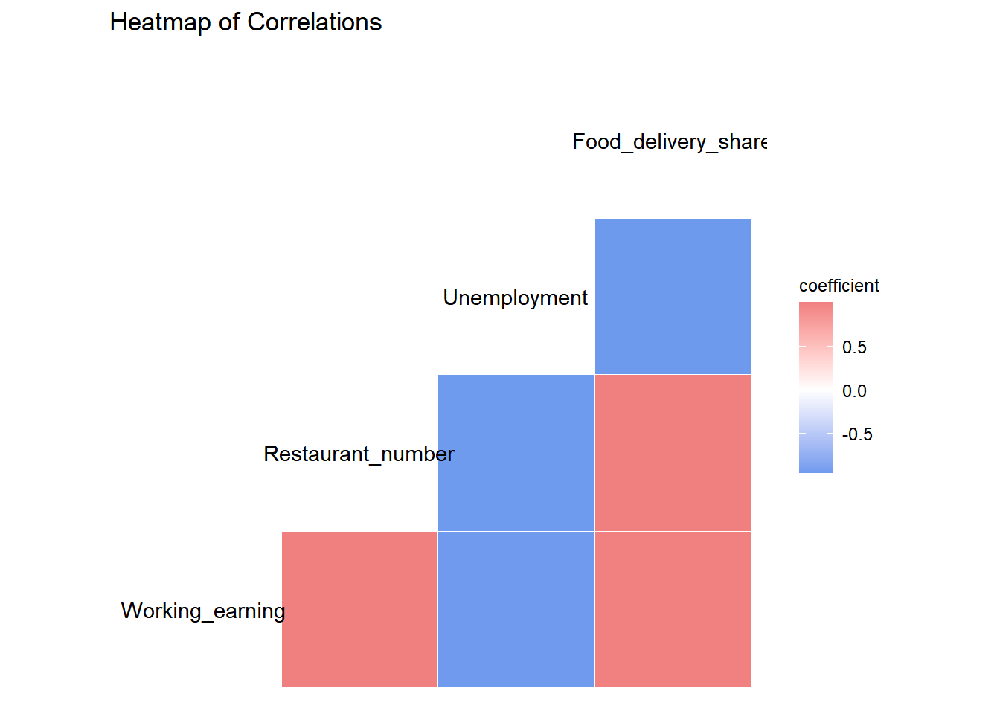
- We originally expected that when working earning rises, the percentage of people who spend money on food delivery will rise as well, because food delivery will be more expensive than other options. And, as previously said, a rise in the number of restaurants would result in an increase in the percentage of the food delivery market, because one of the methods of food delivery is restaurant-to-customer. In addition, the unemployment rate should be inversely proportional to the food delivery market share.
- Working earnings and the number of restaurants are positively correlated with the food delivery market, as shown by the correlogram and heatmap, and the correlation coefficient is strong, near to one, indicating a perfect positive association. Food delivery market share grows as the number of restaurants and working incomes grows, and vice versa. On the other hand, the average unemployment rate is negatively correlated to the food delivery market share.
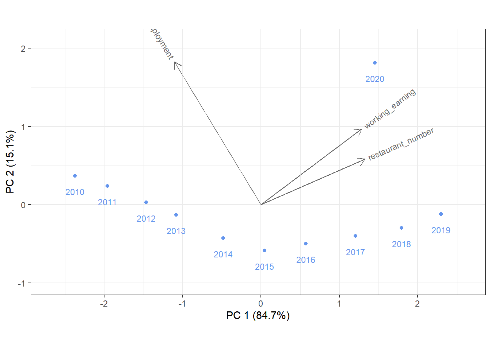
- The market share of each year is quite well distributed for the most part, but there is one outlier, which is the year 2020.
- The year 2019 features high working-earnings and restaurant-number values.
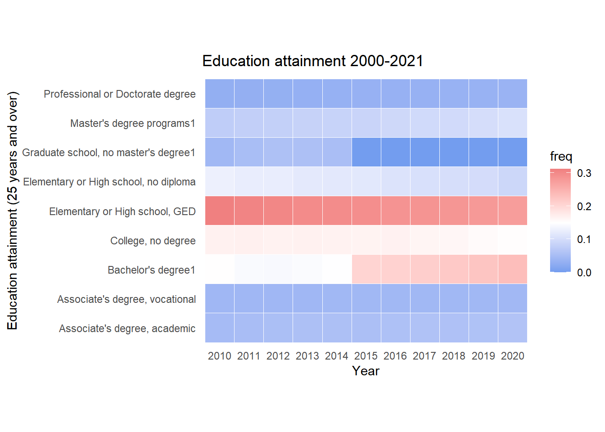
- Because there is no high education threshold for delivery, we initially assumed that the delivery staff’s education level would be low. As a result, when the general number of people without high education level is large, the supply side of delivery will increase. However, we can see from this graph overall education level is improving year after year, indicating that there is no specific relationship between the two.